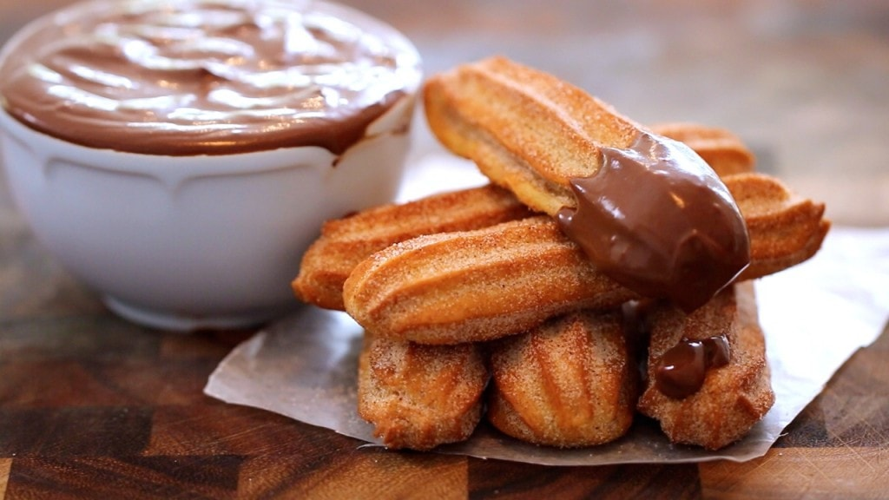

Homepage
Churros Recipe

Churros are a fried dough dessert from Spanish and Portuguese Cuisine.
They're also found in many other countries around the world that have received immigration from Spanish
and Portuguese speaking countries. They're usually served with chocolate sauce.
Ingredients
- 50g melted butter
- 1/2 tsp vanilla extract or vanilla bean paste
- 250g fresh plain flour
- 1 tsp baking powder
- 1L sunflower oil (enough to deep fry)
- a few chunks of bread
For chocolate sauce
- 200g dark chocolate
- 100ml double cream
- 100ml whole milk
- 3 tbsp golden syrup
- 1/2 tsp vanilla extract
For cinnamon sugar
100g caster sugar
2 tsp cinnamon
Steps
- Boil the kettle. Measure 300ml boiling water into a jug and add melted butter and vanilla
extract. Sift flour and baking powder into mixing bowl with a pinch of salt. Mix will into centre, then pour contents of jug
into flour and beat with wooden spoon until lump free. Rest for 10-15 mins. The dough should look like the above image.
- Put sauce Ingredients into saucepan on low heat and gently melt together. Stir occasionally until sauce
is smooth and shiny. Keep warm on until needed.
- Fill large deep saucepan one third with sunflower oil. Heat until cube of bread browns in 45 secs to 1 min. Cover
tray with kitchen paper and mix caster sugar and cinnamon together in a bowl.
- Fit star nozzle to a piping bag. Fill with rested dough, then pipe a few strips directly into the saucepan,
snipping off each strip with a pair of kitchen scissors. Fry until golden brown and crisp.
- Once the churros are crisp and golden brown, remove them from the oil and drain on the kitchen-paper lined tray. Dust the freshly cooked
churros with cinnamon sugar mix. Carry on cooking the rest of the dough in batches. Serve with chocolate sauce.